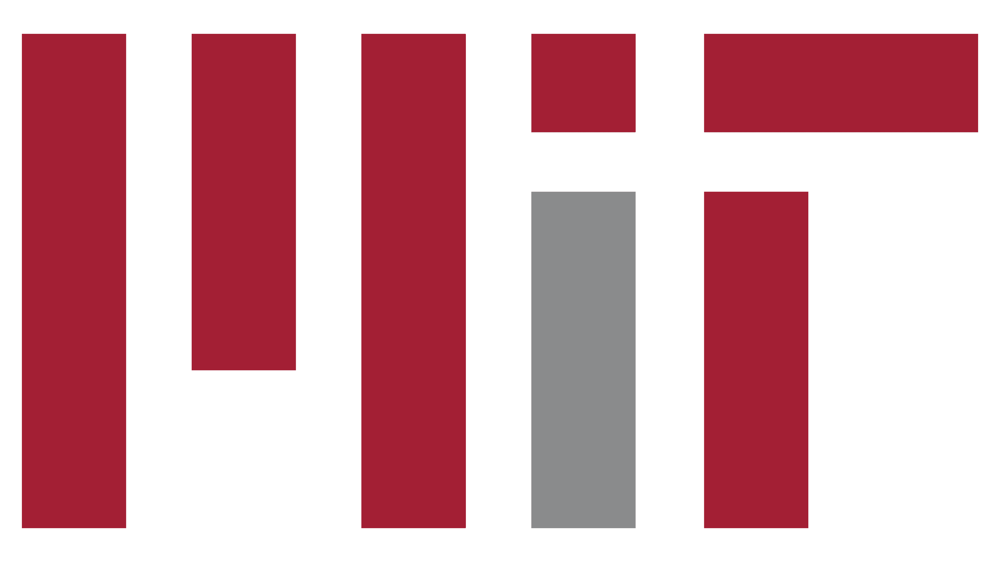

Gordon Chen
Gordon is is a Ph.D. student at the Multimedia Lab (MMLab) at NTU, supervised by Prof. Liu Ziwei. Gordon is broadly interested in computer vision and works with image and video generation and manipulation. He is awarded the Nanyang President's Graduate Scholarship.
Gordon received his Bachelor's degree in Mathematics and Computer Science (Highest Distinction) in 2025 from NTU. During his Bachelor's, he was inducted as a President's Research Scholar (Distinction), Valedictorian Nominee, received the Global Undergraduate Award (Highly Commended Award) and the Outstanding (Achievement) Undergraduate Award.
News
-
Received the Outstanding Teaching Assistant Award.
-
VChain accepted to ACL Findings 2026.
-
Prompt Relay integrated into Wan’s official repository.
-
Prompt Relay accepted to the CVPR Workshop 2026 on Generative AI for Movie-Grade Video Production.
-
VChain received the Outstanding Paper Award at the ICCV 2025 Multimodal Reasoning Workshop.
-
VChain accepted as an oral at the ICCV 2025 Multimodal Reasoning Workshop.
-
STENCIL received an IEEE SPS travel grant.
Selected Publications

Experience
Research Intern
2026
Research Intern
2024
AI Developer Intern
2024

Research Intern
2023
Research Intern
2022
Research Intern
2026
Research Intern
2024
AI Developer Intern
2024
Research Intern
2023
Research Intern
2022
Honors & Awards
-
01
Outstanding Teaching Assistant Award
-
02
NTU Outstanding Achievement Undergraduate Award
-
03
2024 Global Undergraduate Awards Winner (Computer Science)
-
04
NTU President Research Scholar with Highest Distinction
-
05
NTU IET-cup International Collegiate Programming Competition Finalist
-
06
NTU-Google Scholarship
-
07
AISHK Academic Scholar
-
08
Australian Problem Solving Mathematics Olympiad Winner (Gold)
Teaching Assistantships
-
SC2300
Machine Learning
Turing AI Scholars Program · NTU
-
SC1007
Data Structures and Algorithms
Nanyang Technological University
-
MH1300
Discrete Mathematics
Nanyang Technological University
-
MH1100
Calculus I
Nanyang Technological University